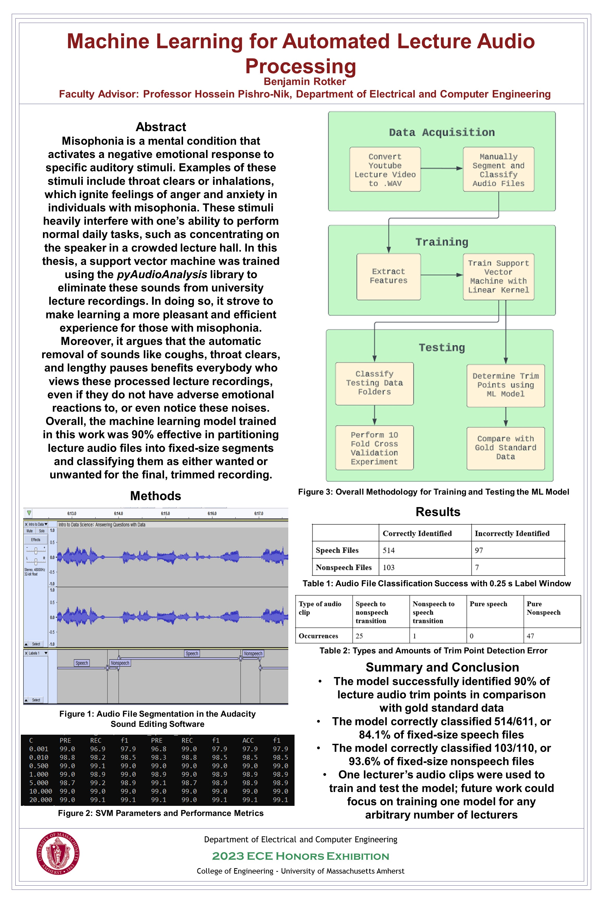

UMass Honors Thesis Project
Another project I took on during my time at UMass was my undergraduate honors thesis. For my research, I wanted to develop a machine learning application that reduced the duration of lecture recordings by cutting out unnecessary audio segments and splicing the remaining, meaningful segments together. Likewise, I began this thesis with an extensive literature review of various topics related to machine learning and its applications in audio signal processing.
Afterwards, I initiated my own research by creating an audio dataset tailored specifically to one lecturer’s speech patterns, as using speech from multiple lecturers could confuse the model that I would eventually train. To do this, I isolated hundreds of audio clips, ranging from milliseconds to seconds in length from a series of lecture recordings on YouTube. Next, I labeled each segment as “speech” or “nonspeech” in the Audacity audio editing software. Speech segments were any uninterrupted string of spoken words containing meaning. Nonspeech segments, on the other hand, were clips containing non-semantic noises that the speaker made. I then trained an SVM classifier with the isolated, labeled audio files produced by Audacity’s label creation functionality and the help of the pyAudioAnalysis open-source Python library.
To evaluate my research results, I tested the SVM’s ability to differentiate between speech and nonspeech clips it had not seen before against pre-labeled testing data, as well as by performing 10-fold cross-validation. I also employed the segmentation functions from pyAudioAnalysis to generate lecture audio trim points using this SVM classifier, before comparing with trim points that were generated for the same lecture by hand, through listening to the audio and manually marking unwanted segments. Overall, the SVM trained in this thesis obtained 90% accuracy in correctly identifying trim points for unwanted sounds in lecture audio. If you would like to access my full thesis manuscript, click
here!
